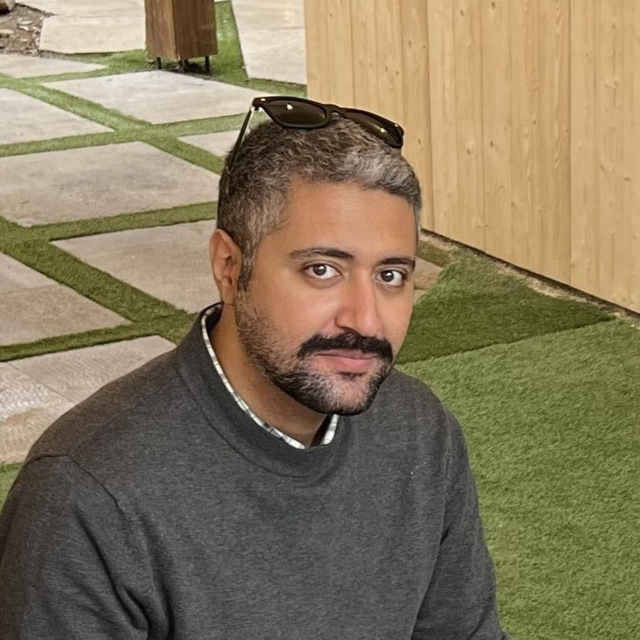

Amirhossein Shirzad
Senior software engineer and applied AI researcher
I build retrieval-augmented generation systems, backends and production deployments, and I work across the whole project: research, architecture and the server it finally runs on.

- Building software since 2013
- Android, backend, AI and XR
- IEEE publication
- Multimodal sentiment analysis, ICCKE 2020
- 10,000+ users
- University of Tehran mobile app I led
- 1st place, OSINT competition
- Fanavard Nationwide Competition, 2016
Profile
I am a software engineer with a research background in applied AI. My work centres on backend systems, retrieval-augmented generation (RAG) and getting machine-learning components into production.
I hold an M.Sc. in Information Technology Engineering from the University of Tehran, completed postgraduate research training in transparent AI and NLP at the University of Galway, and have published a peer-reviewed paper on multimodal deep learning. I have also shipped Android applications and built XR and VR systems for Meta Quest.
Currently I am a full-stack developer at Mellat Ventures, where I own the AI platform, the main website and the infrastructure under both.
Off the clock
Selected work
-
MTForum
Django REST Framework, Next.js, FAISS, SBERT
An AI-powered knowledge platform with a RAG pipeline for semantic search and LLM-based question answering. Indexing is incremental, and cross-process locking keeps concurrent updates safe.
-
CyberRAG
Multi-agent RAG, Python, Ubuntu VPS
A multi-agent retrieval system for cybersecurity question answering. It comes with source code, a technical report, a README and an evaluation test suite, and runs on a self-managed server.
-
mellatventures.com
Django, PostgreSQL, Next.js, Docker, Nginx
A production platform for a venture capital firm, with a blog engine, a newsletter system and signal-driven cache revalidation. Shared infrastructure includes an OTP-based admin login and a signed, rate-limited file-download service used across both products.
-
Bank branch queue management
FastAPI, SQLModel, Next.js
An end-to-end queue system for bank branches, built from scratch for a client demonstration.
-
AI avatar platform
Speech recognition, text-to-speech, NLP, facial animation, computer vision
A multimodal avatar system for interactive applications, with backend services supporting real-time use.
-
Virtual reality banking
Unreal Engine, Meta Quest
An immersive banking application with secure authentication and financial data visualization.
Experience
-
Full-stack Developer
Mellat Ventures · Dec 2025 – present
- Architected MTForum, including the RAG pipeline for semantic search and LLM question answering.
- Built and maintain mellatventures.com, with its blog, newsletter and cache revalidation.
- Own containerised deployment (Docker, Docker Compose, Nginx, Gunicorn) on Linux, including networking, SSR/CSR routing and CI/CD.
- Designed and deployed a bank branch queue-management system for a client demonstration.
-
Co-founder and Software Engineer
VaraSoft · Jul 2023 – Nov 2025
- Led engineering for a multimodal AI avatar platform combining speech, NLP, facial animation and computer vision.
- Designed backend services and APIs for real-time, AI-driven interactive applications.
- Developed a VR banking application for Meta Quest, and cross-platform Android and Windows apps with image processing and AI features.
-
Software Developer
Center for IT and Cyberspace, University of Tehran · Jun 2017 – Aug 2020
- Led Android development for the university’s official app, used by 10,000+ students and staff.
- Designed backend services with Django REST Framework and PostgreSQL, including APIs, data models and deployment automation.
-
Android Developer
Raadwin · Mar 2014 – May 2017
- Shipped several Android apps, including UT App, Football Sticker, YaadYaar and Mr. Albaloo.
- Improved performance and reliability while working with design and QA teams.
-
Software Developer
PulseWare · Apr 2013 – Feb 2014
- Built an automated data-mining and monitoring system for ATM software (C#, ASP.NET).
Skills
- AI and ML
- LLM applications, retrieval-augmented generation, multi-agent systems, NLP, computer vision, deep learning, PyTorch, TensorFlow, Keras, scikit-learn, FAISS
- Backend
- Django, Django REST Framework, FastAPI, REST APIs, WebSockets, PostgreSQL, Redis, SQLModel
- Frontend
- Next.js, TypeScript, React, Tailwind CSS
- Infrastructure
- Linux, Docker, Docker Compose, Nginx, Gunicorn, Git, CI/CD
- Languages
- Python, Java, Kotlin, C#, SQL, Bash
- Mobile
- Android with Java, Kotlin and Jetpack Compose
- XR and multimedia
- Unreal Engine, Unity, virtual reality, augmented reality, Meta Quest
Education and research
-
M.Sc., Information Technology Engineering (Multimedia Systems)
Thesis: Deep Learning Approach for Image and Text Sentiment Analysis, covering text, images, GIFs and memes.
-
Artificial Intelligence research training
Postgraduate research training in transparent AI, visual media processing, NLP, personalization and optimization.
-
B.Sc., Computer Science
Thesis: E-voting system.
Publication
Shirzad, A., Zare, H., and Teimouri, M. “Deep Learning approach for text, image, and GIF multimodal sentiment analysis.” 2020 10th International Conference on Computer and Knowledge Engineering (ICCKE), IEEE, 2020.
Awards
- 1st place, 3rd Fanavard Nationwide Competition in Open-source Intelligence (OSINT), Sharif University of Technology, 2016.
- Best Student Project Award for UT App, University of Tehran, 2017.
Languages
- English: TOEFL iBT 106/120, Duolingo English Test 130.
- Persian: native.
Contact
- Emailamir.shirzad@gmail.com
- LinkedInlinkedin.com/in/shirzad
- GitHubgithub.com/voozet